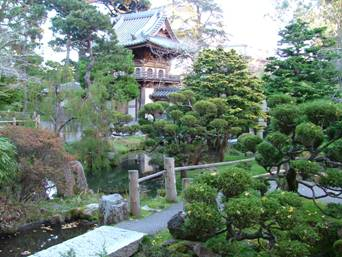

HORT 281 :: Lecture 34 :: TYPES AND STYLES OF ORNAMENTAL GARDENS

TYPES AND STYLES OF ORNAMENTAL GARDENS
Types of gardens - I - formal and informal gardens
Man’s eternal desire is to make his living place like that of a paradise. The geometrical design of the earlier dwellings when man came out of caves lead to orderliness as well as provided life security. But it lacked the raw nature around him inside the dwelling.
FORMAL STYLE
The gardens of Greece and Rome assured an emotional security though their Formal style. The Persian, Moorish gardens of Spain and Moghul gardens were also of the same kind and were strictly formal, symmetrical and geometrical resembling a carpet.
The Italian renaissance garden was having intricate geometric designs, sheared trees, trimmed hedges and edges to create formality.
The impact of formalism influenced the French and British gardens also in the form of parierre, the much divided flower beds.
The Moorish garden of Spain also had the impact of Moghul’s architecture and they were formal and geometrical though Moorish gardens were exclusively meant to beautify patios of large mansions.
The key features of formal design are
- Plan is made on the paper and land is selected accordingly.
- The plan is symmetrical with square, rectangular and roads cut at right angles.
- It had a sort of enclosure or boundary.
- Flower beds also have geometric designs as in carpets.
- The arrangement of trees and shrubs are necessarily geometrical and kept in shape by trimming and training.
- Other features like fountains, water pools, cascades, etc. are used for further attraction.
Demerits
- Formal gardens have no ‘secrets’ and the element of surprise is lost.
- However, attractive focal points at terminal and intersecting points of paths and roads are provided to make the formal garden effective.
- Present day home gardens are laid out in formal design only at the frontage.
INFORMAL STYLE
- Hindu, Buddhist and Japanese garden laid no emphasis on formality.
- Woodlands (vanams) and running water (streams and rivers) was the main feature around which the garden was created in natural way.
- Brindavan of Lord Krishna was a woodland.
- Every temple was provided with irregular shaped lotus tanks. (Latter on such tanks was given masonry boundary either rectangular or square).
- Japanese developed an intensely national and naturalistic style of its own. It is in Japanese garden, the asymmetric balance has been perfected.
- The impact of industrial climate drove the Britishers to opt for natural gardens latter
The further the man is isolated from nature (due to industrial revolution) the deep is the longing to go back to nature. The industrialized cities became concrete jungles with no flavour and aroma of nature and there was emptiness in human life. To avert this, natural gardens was given impetus.
- The nature’s projection of mountains, oceans, rivers and lakes on a larger canvas of earth’s surface is informal with all its grandeur. Such grandeur is mimicked in informal gardens omitting the untamed, disastrous and violent side of nature.
- Lanchlot ‘capability’ Brown (1716-83): She emphasized the use of coloured flower and foliage, tree form, etc. in natural style.
- The cottage gardens of UK had the utility with fruits, vegetable and herb plants as well as the beauty that spans from its harmony with surrounding rural scenery.
Key feature of informal style/natural style
- This style reflects naturalistic effect of total view and represents natural beauty.
- It is contrast to formal style.
- Plan is asymmetrical according to the land available for making the garden.
- Smooth curvaceous out lines are more appropriate.
- Water bodies are more irregular in shape.
- Hillock are made, water falls provided, lakes and islands, cascades, rocks, shola and a rustic hutment are provided to create rural effect. Appropriately grouped plants provide living quality and they are not trimmed.
SPECIAL TYPES OF GARDENS - I - ROOF GARDEN AND VERTICAL GARDEN
Roof Garden
Roof gardening is one of the best ways towards fulfillment of this passion. Roof often are decorated with potted ornamentals, both flowering and foliage. The number of such plants may be small or large. These may be arranged systematically or carelessly. In strict sense this is not roof gardening. A roof garden is one which has close resemblance with the garden on the ground with various features, like lawn, flower bed, etc., laid out tastefully according to the principles of balance and harmony to create beauty. Main difference is in scale; the roof garden is smaller both in expansion and height.
Types
Roof top gardens may be private or cooperative in nature. When the garden is constructed on a private building, usually under single ownership, it is private in nature.
Private roof gardens may be owned by an individual or by an institution, like hotel, bank, office or other such establishments. Nowadays multistoried apartment buildings are coming up. Here, the number of owners is many and all can claim a share on the roof space. If a garden is established on the roof of such buildings, its ownership will be considered cooperative in nature.
The type of planning, gardening and problems associated with cooperative roof gardens are largely different from those of privately owned roof gardens. Under private ownership the making and maintenance of the roof garden is shaped according to the wish of the single owner, his taste, his financial ability and the type of use this garden is put to. Since, under cooperative ownership individuals vary regarding these aspects, a simpler design and management have to be worked out to suit the fancy of each individual owner.
Suitability of the roof
A roof garden puts considerable weight on the roof. The strength of the roof to bear this load is the first consideration before making a start. The best thing is to plan the engineering aspects of a new building to impart enough strength so that the load of the garden on the roof can be carried through without the danger of damage. Since the concept of gardening on the roof is comparatively new in India, this aspect had not been considered while constructing the old buildings. The planning of gardening under these two different situations will be different to a large extent.
Drainage and water proofing
In every roof, the drainage aspect is taken care of during the construction of the building. Hence, drainage should not pose a problem unless it is disturbed during garden construction. Roofs are preferably made waterproof during construction. But this water proofing takes care mainly of the rain water. But if gardening is done on the roof directly, the constantly moist soil is likely to damage the roof. Hence, arrangement for additional waterproofing should be made.Choosing the stretch of the roof, where the construction of the building has been made with an eye for the roof gardening, the whole roof may be utilized for developing the garden. In other cases, a strip of land, 60-70 cm wide, along the side of the load bearing wall may be chosen for planting.
Planting the garden
The planning of a roof garden should nearly be similar to the one on the ground, but with limited features, like lawn, flower bed, edge, rockery, lily pool, fountain, arch, bower, lath house and the like. Other features, like statue, sundial, aquarium, mini-zoo, etc., may be added as variety. Garden lights and music set up enhance the charm of the garden. Small trees, small and medium shrubs and climbers may be grown in appropriate locations. But features like hedge, shrubbery border and big trees have little place in a roof garden.
Gardening
The soil mixture for roof garden should be prepared by mixing equal parts of garden soil and cow dung manure. Leaf mould should be a welcome alternative to cow dung for its light weight and fluffy nature. Layout of the garden should be delineated on the roof with powdered lime and the soil mixture should be spread 15-20 cm thick, leaving the paths lined with bricks. Bricks should be held together through cementing. A gap of 5mm between two bricks should be left approximately at every 50 cm length to act as drainage hole. The soil mixture of the beds should be held back from draining out through these holes by spreading a double layer of close-knit nylon screen along the inner side of the brick lining.
One kilogramme (kg) of oil cake, preferably from neem (Azadirachta indica), mahua (Madhuca latifolia) or karanj (Pongamia pinnata) seeds, one kg of bone meal and 0.05 m3 of small charcoal bits should be worked in every 10m2 of the newly prepared beds. The pH of the soil mixture should be maintained between 6.2 and 6.8.
Enclosure
In Indian cities, sparrows, crow, squirrels, etc., often damage the leaves, flowers and berries in a roof garden. Care should be taken to keep these enemies away. Construction of an overhead framework 2.5-3.0 m high, preferably of galvanized iron pipes overlaid with nylon net, makes a durable solution of this problem. Stakes with their lower ends fixed in the roof soil and upper ends tied with the overhead iron pipes may be used to support plants of the roof garden, where necessary. To check the harmful effect of wind, which often poses serious problem for plants in the roof garden, particularly on a tall building, a wind break screen may be erected on the windward side. This screen may be prepared by training suitable climbers on a wire net stretched vertically on strong poles along the desired side.
Vertical Garden
Preparation of vertical garden
Steps
- Build a 2 foot square by 11 inch high box from redwood, cedar, or pressure treated 2 x 6s. Screw 8 foot pressure treated 2 x 2s at the center and one corner in back, and 6 foot 2 x 2s at the other corner and 18 inches from the back on both sides.
- Pre-drill, glue and screw 1 x 2s every 6 inches, starting at the top of the box. Extend the 1 x 2s at least an inch beyond each 2 x 2 to minimize the danger of splitting.
- Add platforms by screwing on 3 foot 1 x 2s, then screwing on 1 x 2s laid flat to create a miniature deck.
- Add one more 6 foot long 2 x 2 in the center at the front, and screw it to the crosspieces.
- Add a 1 x 4 crosspiece at the top of the two longest 2 x 2s. Attach a bird house to the crosspiece.
- Hang a bird feeder from a curved metal hanger attached to the side of the vertical garden.
- Fill the box with good soil, then plant climbing plants and train them up the lattice. Add other plants in pots and hanging baskets.
SPECIAL TYPES OF GARDENS II - WATER GARDEN AND BOG GARDEN
Water Garden
“Planned planting of aquatic and semi aquatic plants in and around pool is known as water gardening”. The reflections of the sky and the plants on the water surface, little waves passing in parade with gems of sunbeam on their crest, the movement of fishes in water, all give us a very pleasant and happy feeling. A water garden may be large (or) small depending upon the size of the garden of which it is a part. It may be natural (or) artificial / informal (or) formal.
i) Informal pool
Those who are fortunate enough to have a shallow pond (or) a natural depression holding sufficient water and not drying up in the summer (or) over flowering too much in rains, thus maintaining more (or) less a constant level, can start their water garden conveniently in such a pool. These types of pools are informal and so more natural. The curves and bends of such pools must be graceful and artistic and merge with the natural landscape.
The base of such ponds is made impervious to water by the ‘puddling’ method. This can be achieved by importing clay and laying it to a depth of about 30-45cm at the bottom. Puddling consists of pummeling the wet clay with feet, or preferably with a rod. At this stage the clay becomes impermeable to water. The pond will be used for planting true aquatics such as lotus, water lilies, etc, where as in shallow waters near the banks bog plants are planted.
ii) Formal pool
The formal pool need not be situated in a low lying area; rather it should form a main feature of the garden and should be situated in a prominent place of the garden.
Location of pool
The pool should be far away from the tree, as they would cast their shade and drop the leaves into the pond; besides the roots may damage the walls.
Construction
Where natural water body is absent, artificial concrete pools are constructed. The wall and bottom of such pools should be at least 15 cm thick and fully waterproof. The depth should be 1m. Provision should be made for an outflow pipe laid horizontally at the bottom for completely draining out the pool. The end of the outflow pipe should run well inside the pool and fitted with a stop cock. An inlet pipe is also inserted into the pool. When the pool is filled up the excess water would get out through the open end of the vertical branch of the drain pipe. An inner concrete wall, 70cm height, is then constructed 1m away and parallel to the wall of the pond and the space between the two walls is filled with manured soil in sloppy manner.
Testing
After construction fill the pool with water and leave it for at least 4 weeks to test for any leakage and also to allow chemicals harmful to plant life and fish to dissolve out of the cement.
Planting
The bottom of the pond is filled up to a depth of 20 cm with a mixture made up of 6 parts of garden soil, 1 part of cow dung manure, 125g of bone meal should also applied per sq. meter of the bottom. The lilies and lotus are planted directly in the soil and then water is filled in just to cover the crown of the plants. More water in filled in stages as the plants make new growth. In no case should the plants be submerged. As soon as plants starts growth water level should be increased a few cm per day. This will help the growth of the young plants.
Care of the pool
Aquatic plants need very little care. However some species grow very vigorously and need trimming to avoid overcrowding and smothering of weaker species. Sometimes the water of the ponds becomes green, popularly known as ‘blanket of weed’ covers the surface and side walls of the pool. Add 1kg potassium permanganate (or) 120g copper sulphate to every 24,000 litres of water.
Plants for water garden
A) Surface flowering Aquatics
Nelumbo lutea-American lotus
Nelumbo nucifera-Indian lotus
Nymphaea sp-Water lily
Victoria regia
B) Oxygenators
Elodea canadensis
Vallisneria spiralis
C) Floating plants
Eichornia crassipes
Lemna gibba
Marsh (or) Bog Garden
A pond is not an essential feature of any bog garden, but, if there is any adjacent pond, the overflow, the over flow water can be used to keep the marsh garden moist. The main criterion of a marsh garden is to keep it moist and in a swampy state all throughout. For this reason, the site of the marsh garden should be low lying where the surface drainage water will collect naturally.
The whole area intended to be developed into marsh garden is dug up to a depth of 60cm and a thin larger of clay, 10-12cm deep, is placed at the bottom to form the base of the marsh garden. Then a 12cm layer of large stones are placed over this to ensure that the water in the marsh does not become stagnant. The rest of the hallow is filled with a compost of garden loam suffer from drought and be kept sufficiently moist by a trickle of water at the same time avoiding stagnation. All parts of the marsh garden are made accessible by laying paths of rough stones (or) bricks.
Plants for marsh garden
Marsh plants can be categorized into three broad groups.
A. Plants which love 5-10cm of standing water and are termed as “Swamp dwellers”.
B. Plants which live on (or) a little above the waterline, with their roots standing in water-object soil.
C. Plants which grow above the saturated soil, but near enough to send their roots in search of water. eg., Acorus calamus, Iris sp., Alocasia sp.
SPECIAL TYPES OF GARDENS III - TERRARIUM
Terrariums
A Terrarium is an arrangement of plants together in one container, often with other things like rocks, stones or miniature figures and items. Sometimes the goal of a terrarium is just to create a pleasing arrangement of plants and other times the goal is to create a miniature world. Terrarium planting is a specialized part of home gardening, but an interesting one. A great many woodland plants which prosper in their natural environments fail to grow at all in the
house due to the lack of moisture in the air. Terrariums provide this humid atmosphere and allow you to bring the forest plants home. The theory behind the terrarium is that in a closed container the moisture which the plants take up through their roots and transpire through their leaves is condensed and eventually returns to the soil again, keeping the plants watered and at the same time keeping the air within the container at a point below saturation.
History of terrariums
The bringing of the art of the terrarium is generally credited with a man called Nathaniel Bagshaw Ward. This came about with the publishing of his book called "On the Growth of Plants in Closely Glazed Cases" which he published in 1842. The second edition of this book was published in 1852 and is readily available in the public domain. In the preface to his first edition he cites an earlier reference where he wrote a letter that was published in the "Companion to the Botanical Magazine" which was published in the May, 1836 issue. He also gives credit to an author named Mr. Ellis who published an article about growing plants in closed cases in an article in "Gardeners Magazine" in September of 1839. The publication of the "On the Growth of Plants in Closely Glazed Cases" is considered to be the first substantial work that outlines the theory and keeping of terrariums.
Materials Required
It doesn’t take much to set up a terrarium: fine gravel or coarse sand, charcoal chips, synthetic fabric (nylon) or screen to act as a soil separator, and potting mix appropriate to the plants used. If you wish to add a decorative touch, you can cover the soil with coloured stone, bark chips or ground cover plants.
Containers to use
The originality of a terrarium depends on the type of container you use, the plants you choose and the way you arrange them. Any glass container can serve as a terrarium, provided that it is transparent. You can recycle a large glass jar, a fish bowl or an old aquarium. Alternatively, there are some very attractive containers made of wood and glass or plastic available on the market. Terrariums do not require drain holes so, unlike other planting containers, holes are not necessary at the bottom of the container. If you are thinking of starting your own terrarium you will probably find that you have all the material and equipment you need around the house. Fish tanks, especially those that are not too big and unwieldy, make very good terrariums. All you need for them is a glass top. If you are going to start from scratch, you can build your own container using a flat, low sided box for the bottom, and fitting it with glass sides which can be taped together, and a glass top. Although the theoretical airtight terrarium would have no openings whatever, it is safer to provide the container with several drainage holes so that you avoid the risk of over watering and rotting the roots of your plants. If you use a large brandy glass or some other container for which drainage holes cannot be provided, then you must be extra careful that there is a good layer of drainage material (pebbles, gravel, crocking, etc.) at the bottom, and that the soil is sprinkled with charcoal.
Soil mixes/ additives
Use clean, sterilized peat moss based soilless mix with vermiculite or perlite to enable the soil to hold moisture and oxygen. There should be an initial layer of gravel for drainage (one part gravel to two parts soilless mix). Add charcoal to absorb odour (one tablespoon per cup of drainage). In a small terrarium, omit the gravel and use charcoal. Soil separator can be used to keep the layer of charcoal apart from the soilless mix. Use fibre glass drapery fabric, nylon tights, sheer drapery, screening (not metal) or landscape fabric. Use sand in a desert terrarium. Sand should be bagged, washed and free of salts. Leaf mold can be used for woodland soil mixes but should be sterilized. Limestone can be used, especially for desert terrariums. Bone meal can be used in desert terrariums; do not use fertilizer in the initial planting.
Watering, ventilation and sun
When your plants are all in position, the soil should be well watered. If you can do this in the kitchen sink or in the bathtub where you can give it a thorough wetting and then allow the excess to drain out, so much the better. The frequency with which terrariums must be watered after they have been started depends on how much ventilation they are given. Although opinions vary, it has been our experience that the plants will prosper if they are kept covered during the day and the top is partially slid off at night. If this system is followed, we think you will find that your terrarium garden will need watering only once every few months. Terrarium plants need sunlight, but in limited amounts. An east or west window will do the trick, or a south facing location, if there is a glass curtain between the window and the container.
Lighting
It's important that the plants receive bright, indirect or dappled light. While direct sun will usually cook or sunburn the plants, too much shade will cause stringy growth and poor colouration. Different plants have different needs, but a good starting place is to use four fluorescent tubes for a tank that is 12-14 inches wide. The length of the tubes should be as long as the tank. 50% Gro-Lux® plant lights and 50% cool white, placed alternating across the top are used. The lights should be barely above the tank cover and the plants from 4-7 inches below the lights. Spot lights put out more heat and less light and are not recommended. Natural sunlight can be used if it is filtered through a sheer fabric, white plastic or partially shaded by other plants that do not have large, broad leaves, (too dark). Watch your plants and adjust the light as needed. Spindly, thin and stretched growth indicates not enough light whereas pale yellow leaves with burned edges indicates too much light. For those of you with light meters: place the sensor in the tank and under the cover. When the sun or lights are illuminating the terrarium, an average candlepower runs from 500-800 using natural light, and from 400-600 using the above fluorescent lights. High Pressure Sodium and Metal Halide are usually at 600-850 foot candles. These general guidelines may need to be adjusted according to what you are growing. In any case, do not let the lighting run the terrarium temperature above 95°F.
Location
Location of the terrarium will play a part, too. If it will be in a sunny place, succulents may work best. A succulent is a water retaining plant that does well in arid conditions (e.g., jade plant, Christmas cactus, sedum). If the terrarium will have a lot of shade and moisture, in a bathroom for instance, then ferns and mosseswill most likely be a good choice.
Terrarium tools
Some tools and terrarium supplies to plant your terrarium, especially if it has a small or narrow mouth.
- Tweezers and long sticks can be used to dig holes, move items and support plants while they are being planted.
- A long, thin spoon will be helpful in placing soil and drainage material in the container.
- If a container with a very small opening is used, make a funnel from paper or aluminum foil for placing soil into the container.
- Household scissors are handy for pruning plants before they are planted.
- An atomizer or bulb type sprayer will be useful for spraying and watering plants in the terrarium.
- A stick with a wire loop on the end is handy for lowering plants into large terrariums with small tops.
Terrarium-work to be done
Laying the groundwork
The way you place the soil at the bottom of the terrarium is extremely important. It should always be well drained. Start out by placing large pieces of concave crocking over each of the drainage holes to prevent the soil from leaking out. Then add an inch or so of good drainage material. Follow this with another layer of a couple of inches of a good potting mixture, such as those that can be bought in a garden supply store. It should be filled in firmly, but not tamped down too tight. The soil should be slightly damp, but not soaking wet. Then place the
plants, which should be ready nearby, by digging small holes large enough to accommodate their balls of earth in a pleasing arrangement.
Plants to grow
In addition to lichens and mosses, a good many plants which grow in the open air of your living room will prosper as well in miniature form in the terrarium.
Low light plants
Plant |
Height |
Comments |
Swedish ivy |
1-3" |
Very durable |
Bird Nest Sansevieria |
3-6" |
Will survive almost anywhere |
Maidenhead spleenwort |
1-3" |
Lays across the ground |
Moderate light plants
Plant |
Height |
Comments |
Heart leaved philodendron |
12"+ |
Climber or trailer |
Irish moss |
1-3" |
Excellent groundcover |
Maidenhair fern |
6-12" |
High humidity |
Miniature peperomia |
1-3" |
Do not overwater |
Tahitian Bridal Veil |
3-6" |
Creeper or trailer |
Parlor palm |
12"+ |
Slow, but may become too tall |
Nerve plant |
3-6" |
Pink or white |
Podocarpus |
12"+ |
Slow growing mini-tree |
Prayer plant |
6-12" |
Leaves fold together at night |
Spider plant |
3-6" |
Easily propagated |
Strawberry begonia |
3-6" |
Spreads by runners |
African violet |
3-6" |
Best to select miniature varieties |
Aluminum plant |
6-12" |
Keep compact by pruning |
Artillery plant |
6-12" |
Forms umbrella-like canopy |
Baby tears |
1-3" |
Excellent groundcover |
Club moss |
3-6" |
Tolerates low light |
Creeping fig |
1-3" |
Creeping groundcover |
Dwarf natal plum |
6-12" |
Prune to keep compact |
Emerald ripple peperomia |
3-6" |
Do not over water |
English ivy |
6+" |
Cut back to prevent crowding |
Flame violet |
3-6" |
Likes humidity |
Creeping Charlie |
3-6" |
Excellent groundcover |
Earth star |
3-6" |
Nice accent plant |
Miniature Begonia rex |
3-6" |
Likes humidity, but not wet foliage |
Golden pothos |
12"+ |
Cut back to control size |
Button fern |
3-6" |
Fills in any space nicely |
Pitcher Plant |
6-12" |
Carnivorous plant |
{kind=link}
Bright light plants
Plant |
Height |
Comments |
Elephant bush |
12"+ |
Desert gardens only |
Haworthia |
1-6" |
Desert gardens only |
Hen and chicks |
1-3" |
Desert gardens only |
Jade plant |
6+" |
Desert gardens only |
Panda plant |
6+" |
Desert gardens only |
Oxalis |
3-6" |
Shamrocks |
False Aralia |
12"+ |
Keep compact by pruning |
Watermelon peperomia |
3-6" |
Do not over water |
Asparagus fern |
6-12" |
Feather-like foliage |
Venus fly trap |
1-3" |
Carnivorous plant |
Sundew |
1-3" |
Carnivorous plant |
Bloodleaf iresine |
6-12" |
Blood red foliage |
Plush plant |
6-12" |
Desert gardens only |
Maintenance
Any dead leaves or rotting plants in your plant terrarium should be removed promptly with tweezers before the problem spreads to other plants. If a fungus seems to be spreading from a plant through the growing medium, remove a portion of the medium in the infected area and replace it. Apply a general fungicide to reduce spread of the disease. General maintenance required is,
1. Moisture balance
After planting an 'open' terrarium mist plants to clean them and to clean the glass walls of the container. If using a 'closed' terrarium keep the lid off until the plant foliage dries. The water in the bottom should not be more than 1 inch deep in a terrarium after planting. Once the moisture cycle is established, it is self perpetuating. Changes in light and heat are not likely to cause problems in the long run. If moisture does not appear on the glass for over a week, add some water. Most terrariums (if closed) need added water every 3 or 4 months. Open terrariums require moisture more frequently, but not as frequently as plants in pots.
2. Plant growth
Pinch back regularly to promote bushy growth. Prune woody growth to encourage compact growth. Always cut back to leaf or branch joint. Remove plants if the terrarium looks overgrown or if diseased or infested with insects.
3. Temperature
Maintain daytime temperature range of 65 - 80 degrees with a night-time temperature of ten degrees lower. A sealed terrarium is protected against sudden temperature changes, drafts or excessive dryness, as long as the environmental change does not last longer than 48 hours.
4. Light
If light conditions are not ideal, the plants will stretch or look too pale. Direct light is required for desert terrariums with no lid. Indirect strong light (east or west facing window) is excellent for tropical or woodland terrariums or up to 1.5 m away from a south facing window. Medium light is acceptable for woodland or tropical terrariums (1.5 to 4 m away from south, east or west facing windows). Low light is used for low light tropic plants (4 to 6 m away from sunny windows and 1.5 to 3 m away from north, east or west windows).
Advantages of using terrariums
-
Ideal environment for plants that require constant moist soil and or atmosphere.
-
Plants grow slowly and evenly.
-
An interesting alternative to using pots when space is limited.
-
Easily moveable.
-
Good for miniature specialty gardens.
-
Safe around children and pets.
-
Fun to make.
Types of terrariums
The upside down terrarium
This is a unique little terrarium that looks great. But it was quite a challenge to figure out how to do it right. Filling it with the materials like soil, stone and seeds then flipping it over real quick didn't work. The sides got dirty. All the standard terrarium making materials are used. It includes soil, seeds, spagnum moss and pearl stone for drainage. The trick is getting them in the top of the bottle or jug without getting dirt on the sides.
Apothecary jar terrariums
These jars make stylish and very attractive terrariums and they are small enough for a beginner with a large mouth for easy access. Apothecary jars make great containers for terrariums. They are attractive looking, reasonably sized and have a large mouth for easy access. If you want a good looking and easy to make terrarium this is a great way to go.
Moss terrarium
Moss terrariums have become very popular lately. Mosses could be collected from the local cemeteries, wooded areas and special note and caution about using any kind of external plant, rock or wood piece in your terrariums: Moss, Rocks, Plants, Wood pieces from the outside world can carry insects with them. Or even insect eggs that you can't see. Immediately these should not be added to any indoor plant or terrarium. First we should quarantine them in a sealed transparent container for up to a month. This way we can see if anything develops or any eggs hatch.
Hunting for Moss
- Shady Spots - the moss in sunny areas was often brown and unhealthy.
- Angled and slanted areas (they seemed to grow well on the sides of small hills).
- This could be a water preference. On a slanted location the moss will get water only for a short period of time which is rather interesting, this leads us to believe the moss will do well with frequent but very light watering.
Desert themed terrarium
This kind of terrarium is attractive, fun to make and very hardy. Here is a complete tutorial on how to make one. A Desert themed terrarium is a fun project to make and it is something that is relatively easy to care for. A variety of cacti and succulents which don't require a lot of water and are very tolerant of sunlight are used. This kind of terrarium can also be done in an open dish which is easier to make than in a closed container.
Carnivorous terrariums
Growing carnivorous plants in the home requires the mimicking of their natural environment so that they thrive. As carnivorous plants usually grow in extreme conditions it is more challenging to do this for carnivorous plants that for most other house plants. The majority of these plants grow in areas where the soil is extremely acidic and often very wet such as in bogs, or in soils that lack most of the nutrients that most plants need. Bright light is required by most carnivorous plants. For artificially lit terrariums use fluorescent rather than incandescent bulbs to prevent overheating.
STYLES OF GARDEN
Man was able to harmonize with the external environment viz., nature in as much as he was in harmony with the internal environment viz., self composed of feeling and desire. The civilization of the present and the recent past made the globe as village through its advancement in science and technology, isolated the human race from the nature externally and alienated the self internally. The nature has been exploited to the core for bodily pleasures and the self has been ignored, leading to the deterioration in the psychic, which lost righteous and reason.
To make the self to be in tune with the body and the body in tune with the nature, there has come the necessity to create artificial pleasure gardens, psychic gardens and biological gardens.
Hindu type of garden
Vanams in the earlier period served the purpose of a garden and was synonymous with garden. Vanams were the natural gardens furnished by the mother earth for the humans and animals to dwell on and inhabit in such vanams were put to various uses by the various sections of the society. Vanavasam was part of the life of Vikrmaditya, Rama and Pandavas. The great sages reside only in vanams to attain spiritual bliss.
Rajavanam
Area of natural forest exclusively meant for the ruler or kings to hunt wild animals. More than hunting, it was the time spent in hunting that is relaxing in real sense. Latter on four kinds of Rajavanams came into existence.
- Promododyan: Private garden fro king and queen exclusively. It would get attached to the forts when queen resided.
- Udayan: A vanam where the kings passed their leisure time in playing chess, enjoying dance and listening to music.
- Vriksha vatika: a vanam meant for ministers and courtiers where they made merry with courtesans.
- Special gardens dedicated to God with water pools studded with lotuses and lilies.
Tapovanam
It was meant for sages and hermits who would proper to be in tone with nature and meditate to explore the self and the universal god head. Tapovanams would have the trees of spiritual significance.
- Guttadia speciosa (Panneer)
- Couropita guinensis (Nagalingam)
- Butea frontosa (Vedic tree, real flame of the forest)
- Caliophyllum inophyllum (Punnai)
- Michelia champaca (Sanbakam)
- Ficus bengalensis
- Nauclea eadamba (Kadambam)
Brindavanam
It means a place of eternal bliss. It is supposed to be the advanced version of tapovanam. It is a natural abode where the sages relinquish their physical body and attain radiant body (Nirvikalpa Samadhi) and the soul part of the body conjoins with the absolute. God head in eternal ectacy. Eg: Arvind Ashram, Pondicherry; Mantralayam of Ragavendra and Ramana and Seshadri brindavans at Tiruvannamalai. Trees with showy, colourful flowers to express the absolute joy would be grown in Brindavans.
Asokavanam
It was a place or a garden where royal ladies like queens and princess relax. Asoka trees (Saraca indica) were grown in woodlots. The down flowing coppery leaves of Saraca would suggest to royal ladies that their kings would return with triumph and pacify their emotionally imbalanced heart.
Nandavanams
They are small gardens established around village temples. There the flowering shrubs whose flowers can be offered to various deities are grown for daily rituals. Eg: Tauberna montana coronana, Hibiscus, Tecoma, Nerium, Occimum sanctum, jasmines, etc.
Indus and Harappan civilization
The history of systematic gardening in India is as old as civilization of Indus and Harappan which existed between 2500 BC and 1750 BC.
- Harappan pots were generally decorated with designs of tress - pipal, mango and neem.
- The cult of animal and tree worship was at its peak.
- The tree of pipal (Ficus religiosa) and banyan (Ficus bengalensis) served mankind and fauna in many different ways and they were considered as the symbol of fertility.
Aryavartha period
It existed during 1600 BC. Aryavartha means the country of lotus and sunshine. Lotus signifies the soul and the sun signifies the Godheads. The blooming lotus on the radiating sun’s arms symbolizes the ultimate purpose of human life, the soul’s unification with God.
- They were ardent lovers of nature.
- They used flowers on religious and social ceremonies.
- They named the kids after the flowers. Eg: Kamal, Champagam, Madhavi, Chameli, Rukmani, Mallika.
Literature
Ramayan narrates unending list of trees, shrubs, creepers, etc. which were in use for adornment and also as seen wild in nature.
Mahabarat embodies names of various vegetation and flowers along with Kurkshetra war. In Pathu pattu, the names of 99 flowers have been mentioned at a stretch as having collected by the lady who awaited her would be who was yet to make his presence.
Kalidasa’s poetic description of nature was vivid in Sakuntalam in which there was a metaphor on a twining Madhavi lata (Hiptage madablota) on a mango tree indicating the sweet, supple womanhood through the vine and the youthful vigour through the tree. The Megha sandesam and Regu vamsam were full of descriptions of vegetation between Ujjain and alpine Himalayas.
Very frequent references were made about flowers in folklores right from birth ceremony to the death rituals which indicates the association of flowers with social life.
Buddhist Type
Lord Buddha preached the concept of ‘thoughtlessness’ (Nirvana) as the only remedy for human misery caused by the desire part of the self which resides in the physical bodies a divine force.
Thoughtlessness can be achieved not by suppressing the ‘desire’ but by exploring the desire within.
‘Exploring within’ would be possible only when one’s mind is detached from the senses and tries to identify the self within.
Buddhist gardens were so designed that no component will excite the senses and such gardens were established around vihars and latter came to be known as Amaravanams.
The key features are
- No artificial structures would be put up in any form.
- No one will pluck the flower to offer to the lord. Only the fallen flowers alone are collected and offered to the Lord.
- Mostly, the trees with white and saffron coloured flowering trees were preferred and planted.
- The trees shouldn’t invite birds either for nesting or for eating the edible fruits as the sound of birds may disrupt the silence.
- Extreme silence should be ensured in the garden so that one could enjoy meditation peacefully.
- Life of Buddha had been identified with trees and flowers.
- According to Hiuen, Tsang, Budha was born in 563 BC under the tree of Ashoka at Lumbini.
- He attained enlightment under the tree of pipal at Gaya.
- He preached the first sermon of his religion under mango tree at Saranath (Varanasi).
- He entered into Samadhi in a sal grove.
- During Ashoka’s period, avenue planting on road was given priority (264 – 227 BC).
- He wrote the messages of Buddha on stupa; in which a pipal tree, wheel and lotus were also carved.
- Lotus represented the birth of Buddha, the pipal enlightenment and stupa the unification with god.
Japanese type
The entire world watched awestruck as the half century old soviet empire suddenly came unglued and is near chaotic changes today.
Slowly or less dramatically the other super power the United States also went into relative decline. While the two super powers faded, Japan’s economy skyrocketed.
Now the Japan’s attention has been focused in Europe and Germany in particular. In Europe power has been shifted away from London, Paris and Rome as the German’s economy has outstripped all the rest. Now the nations of Europe are caught between Bonn and Berlin.

But in Japan is to continue to top in economic arena in as much as it started looking into 21st century by 1970 itself. As per the Japanese legend, ‘Sanshu No Jinji’ the three sacred objects given to Sun God are
Sword Jewell and Mirror
implies implies implies
muscle power money power self knowledge
The success of Japan is to be attributed to the self knowledge or the knowledge of the ‘self’ which is inner. Self knowledge can often be used to make the other party to like your agenda for action. It can be used to punish, reward, persuade and even transform an enemy into an ally. Best of all, with the right self knowledge, one can circumvent nasty situations so as to avoid wasting force or wealth altogether.
With all modern, advanced electronic gadgets available to make the day to day life highly mechanical, the Japanese life is still undisturbed and social fabric is still vital and vibrating with human tendencies. This has been attributed to the fact that their way of life stems from internal power, the power of the self; the external developments are kept at check by the internal power of self.
The internal power of the ‘self’ is understood and harnessed by meditation of the body. Every individual meditates and thus the entire nation to bring out the best of human on the intellectual arena.
Japanese gardens type is nature in miniature which enables them to meditate, be in harmony with nature even while they are busy with daily routines.
History of Japanese garden cult
592-628 AD |
: |
Empress Suito: Garden style with originated with rocks, water, trees and plants |
646-794 AD |
: |
Nara: Chinese influence introduced birds, animals and fishes to the above. |
794-1185 AD |
: |
Heian: Korean architecture influence introduced an open space, pond with an island, hill and a stream of water. |
1185-1392 |
: |
Buddhist influence through silk route. Flat gardens (Hira-niva) came into existence stones and trees were arranged on a ground adjoining vihars to bring the desired effect. |
1603-1867 |
: |
Gardens were beautified with large lakes and islands surrounded by paths leading to the structure of the garden. |
Forms of Japanese type
A) HILL GARDEN
The main features of hill garden are hills, streams and ponds along with other features
1) Ornamental water
Water is the life of the garden and necessary feature of Japanese hill gardens. It may be present in the form of big lakes with a calm tranquil surface or symbolically in the form of water basins of natural shape.
Waterfall is another means to bring the natural setting into a garden. A group of stones is raised and water is allowed to fall from it naturally. The trees are planted in front of the place where waterfalls. Wells serve a dual purpose for beauty as well as utility.
2) Islands
Islands are important feature and are located in the middle of the pond. Rocks are used for foundation of island and soil is deposited on it. Then trees are planted and stones are erected in an irregular manner to give natural touch. Islands many be connected by a bridge or left isolated.
Different islands are formed because hills, lakes and islands are complementary beauties. They are given personal touch by naming them as master island, guest island and central island.
3) Hills and hillocks
A bigger sized broad viewed hill forms the main feature (hill 1). Secondary to it, a lower hill is created adjacent to hill 1 and is called companion hill (hill 2). A lower hill 3 is projected front opposite to hill 1. Hill 4 is elegantly introduced in the foreground close to hill 3 and below hill 2. At the far end, hill 5 is to be located which could be seen from all parts of the garden.
4) Stones
The stone structures are used to depict different natural moods, ideas of spiritual and melodic. There are 5 such types of stones as described below:
- Status stone: A tall vertical stone bulging out towards middle and finishing at the top suggesting a human at thinking or meditating.
- Low vertical stone: is rounded at the base and its top is bent resembling the bud of magnolia.
- Flat stone: is a low broad stone of irregular shape with a flat top suggesting submissiveness.
- Recumbent or ox stone: resembles trunk of an animal. Its long curved and bent boulder suggests an animal hiding in a bush.
- Arching stone: is arch like as its name indicates and suggests flexibility in thought.
- The above stones can be grouped into two, three or four to give different meanings as below:
a) Three stones placed at the edge = long life stone of beach
b) Two stones o the bank of lake = Good luck stone or river
Such stones are located in ten positions in a hill garden most central (Guardian stone), opposite to the fall (companion stone), foreground centre (worshipping stone), foreground left (interviewing stone), foreground right (waiting stone), between two hills (man shadow stone), near central group of trees (cave stone), at the heart of the garden (seat of honour stone), 1st stepping stone (pedestal stone) and pair of stones near entrance (idling stones).
5) Trees
Trees are planted with certain objectives and have been given specific names.
- Principal tree: Group of trees planted at the central part of background.
- View perfecting tree: A tree planted in the foreground of an island.
- Tree of solitude: Group of trees with thick foliage in the background on one side.
- Cascade screening tree: Group of bushy or leafy tree planted at the side of waterfall to hide the portion of it.
- Tree of setting sun: is planted in the west side to filter the glare of setting sun.
- Distancing tree: Pine plants planted to give a forest look.
6) Garden lanterns
Stone and bronze lanterns were used to decorate Buddhist temples. They became the thing of beauty in gardens also. Standard lanterns or legged lanterns or stone lanterns are used in an informal manner to decorate the garden.
7) Garden pagoda
It may be in the form of stone tower or pagoda. The roof may have three, five or seven a nine or eleven separate roots.
8) Garden bridges
There are made of natural wood of stone varying in size and width. They are used to connect islands. Either single stone or many pieces have been used to make the bridges sometime, semicircular arch. Form of bridges is constructed on the special ponds to permit the passage of boats under it. The bridges are named as wooden trestle bridge, ‘peeping’ bridge, ‘granite slat bridge’ curved bracket bridge, Chinese full moon bridge, etc.
B) JAPANESE TEA GARDENS
In Japanese the tea ceremony has gained the status of national ceremony and has been intricately woven with life style. A glimpse of tea room or more sitting at tea room for a while itself is a, pleasant experience. Mat floor and wooden walls with all bamboo works. Pale brown is the colour everywhere. Two ‘L’ shaped benches and in front of which a sturdy but long tea poi.
No one should talk or gossip during tea ceremony. Even those who walk, conduct themselves in such a way that no noise is produced. It is really breathless silence as if one is in front of Emperor or Religious heads.
Tea is boiling in a vessel at one corner and a middle aged lady looks after the tea. The vessels are artistically made. The vessels are cleaned by with silk towel. The lady pretends as if she is cleaning the vessel since it has already been cleaned. The pretension is something like that of abhinaya bhava in Indian Bharatanatyam. Some other girl enters the room and she handles the cup and saucer. She cleans the cup and saucer and places them before the guests. The guest looks the inside as well as the outer surface very carefully. She just smiles and nodes her head towards the guest seated next. The next guest does the same careful look and passes it to the next. The process continues till all guests have a look of the cup and saucer. Such a dead slow process is the key feature of the tea ceremony as it makes one to be silent and the mind is attentive to the saucer alone. The mind is detached from the daily chores of high speed. Almost is another form of meditation to harness the power from inner self.
Then, in a tissue paper, an edible item is provided. The eatable is taken along with the tissue paper and while eating, the tissue paper hides the facial expression which is considered as unethical in Japanese life more than the taste of the stuff, the way in which it is eaten is curious to look at.
Tea is provided finally. It is green tea. The tea has to be sipped with extreme silence by the guests and after saying thanks in Japanese style, one is expected to leave.
Sometimes the tea is served outside in a garden which is called as Tea garden. Tea garden is just the nature recreated in miniature in front of the house. A path leads from garden to tea hall which is as specified by ancestors. Before one makes entry into the tea room in a garden, one should clean himself in the water kept in unsized granite troughs.
Such tea ceremony has been introduced into Japan by Zen-Buddhist monks. ‘Zen’ is a word derived from Tamil word ‘Thianum’. Bodhi Dharma introduced the system of ‘Thianum’ (meditation) through tea ceremony. Not only the common people but also the Emperors and rulers followed the Zen. The philosophy of perseverance learnt whatever worst may happen; doing the duties meticulously; cleanliness, softness and sweetness become basic principles of Japanese society.
To attain such a mental poise, tea ceremony happens to be training. An example for the effect of mediation on mundane life is that the army should divert its course of march if a flower happens to be in the path enroot. It may be the symbolism of how a monk conducts himself to go and meet the Bodhi Dharma, the chief monk at the sanctum sanitarium and receive spiritual message. Tea decoction was considered to help meditation in those days.
The present day Japanese tea garden is sectioned into three areas viz., sotoroji (outer section), machi (middle section) and uchiroji (inner section).
Outer section
The guests are supposed to wait after removing shoes. Paths will be provided with stepping stones to lead to middle section. Stone benches of irregular size are provided and the area is not planted with many kinds of plants except grasses.
Middle section
Stone troughs with water are kept for the guests to clean themselves before making entry into the inner section. Here also the stepping stones and naturally looking objects are located in an unkempt manner.
Inner garden
It is extremely simple and natural stones, lanterns, rocks water basins which look as antiques are placed. The trees, shrubs, annual and grasses are put in an informal manner. A rustic well compete with lever, rope, bucket, pulley etc. is an essential feature of inner garden. Hedge walls are provided to look natural. Stones viz., kettle stone, front stone, sword hanging stones, candle stick stone and low basin stone are kept in an informal manner.
The selection of trees is such that when the outer garden is exposed to the light the inner must be darkened by shady evergreen trees.
In India, tea type Japanese garden exist at Kamala retreat of Mr. Singhniq, Kanpur; Roshanara Garden, New Delhi and Mrs. Indira Gandhi personal residence garden.
C) FLAT GARDENS
Flat gardens lack ups and down and devoid of hills, streams and ponds. They are created for confined places and are secondary in importance. Mostly Moore type gardens are developed to create scenic beauty, other adornments like stones, well, water basin, tree, etc. are used. Water current of an ocean effect is produced by covering the land surface with pure sand. The rocks or pebbles are so arranged that they give an effect of diversion or rush or water.
The key features of Japanese type
- They are nature recreated in miniature.
- They aid a person to meditate peacefully.
- The colourful leaves or flowers which distract the eyes are avoided.
- The green foliaged plants are made use of
- Totally informal in design.
- The natural elements like, mountains, islands, rivers, lakes, streams, bridges are made use of as components.
PERSIAN GARDEN
Water was central feature of garden design with religious symbolism; water occupied the space and interpenetrated from the open court into the enclosures.
The Islamic view of heaven or Paradise is a beautiful garden and the day of judgment will take place in gardens of pleasure complete with cooling springs and fountains.
The traditional Persian garden was composed of four essentials as below:
- Water for irrigation, display and sound
- Shade trees for shelter
- Flowers for scent and colour
- Music to delight the ears
A typical garden is a quadrant pattern with water channels dividing the garden into four sections and this design is called as Char Bagh Design. There was usually a pool or small hill with a pavilion at the intersection of the channels.
Desert of West Asia influenced the Persian type and functions of garden. The garden is a place to escape from the harsh aridity of desert. Shade trees and fruit trees were grown in four square plots as in Persian carpet. Scented flower were accepted in Persian gardens.
MOGHUL GARDENS
The great Moghul Emperor Babur had high aesthetic sense and was fond of gardens. Garden of Panipet and Arambagh garden at Agra are still maintained. Moghul gardens are synonymous of formal style of gardening which is an extended dian of primitive Persian garden is Char Bagh design. The same style of gardening was preserved by Moghul descendents.
Aram bagh garden at Agra
Humayun: Shady trees in all roads
Akbar : Garden of Fatehpur Sikri (Agra) Tomb garden
Jahangir: Shalimar Garden of Kasmir, Itmad-ud-Daula (Agra) Garden and Dikusha Garden at Lahore.
Shahjahan: Shalimar of Lahore, Chashma Shahi (Srinagar) Taj Gardens
Aurangazeb: Aurangabad Garden, Picturesque Pinjore Garden
Being architecturally suburb, aesthetically designed, and harmonically planted, they create breathtaking sight. Broadly Moghul gardens can be categorised into two: i) Pleasure gardens of Kings and Queens ii) Tomb garden. The former gardens were made with the sole purpose of pleasure of King and Queen and family members whereas the latter gardens were attached to tombs of King or Queen for giving peace to soul.
General features- Gardens are formal in style; symmetrically planned with rectangular or square plots.
- All Moghul gardens were extended Char bagh design of paradise garden of Persia.
- The garden area is divided into four plots by water channels. These four channels represent four rivers of life. The running water provides coolness and freshness to the garden. Reflection of sky and trees provide unique beauty to the eye.
- The four plots are planted with trees, shrubs, etc.
- The axis is straight and central and sometimes represented by tree lines.
- The water pool created in the centre with over flowing water serves as central specimen.
- Fountains, cascades are linked to central pool to create scenic beauty.
- In latter phase terminal building (Taj Mahal) has been added to enhance vista.
Key Features
i) Terraces
Terraces are components to maintain the proportion of land for extended view irrespective of topography of the area 7, 8 or 12 terraces symbolize 7 planets, 8 paradise and 12 zodiacal signs. The entrance is located at the lowest terrace.
As the Moghul emperors came from a hilly country, the idea of building a garden in terraces came to them naturally.
ii) Running water
Water is the life and soul of Moghul garden. Love for running water made the Moghuls to select sites centering round hill sides and rivulets for their garden.- The idea of constructing canals and tanks to keep the water brimming to the level of paths on either side was borrowed from Persians.
- Water channels were paved with tiles of brilliant blue color to reflect the sky and give impression of depth.
- Various patterns were used for paving the marble stones and style so that running water is thrown up and broken into ripples such white shawls of water is characteristic feature of Moghul garden. At dusk, tiny lamps placed in niches behind the water falls were lighted and the diffusion of light through the water creates a very pleasant sight.
- Moghul gardens are protected by a high strong wall.
- The top of the wall is adorned with serrated battlements. The presence of high wall was protection against enemy and hot winds of summer.
- Water: Source of life
- Cross at intersection of water channel meeting humanity with God.
- Eight divisions: Eight divisions of Koran
- Alternate planting of cypress and flowering trees: Immortality and renewal of life.
- Bauhinia alba: Youth and life.
- There were terraces adorned with marble colonnades.
- There were rose gardens, fountains, pools, alleys of ilex enriched with sculpture, edges, grove of walnuts and acacias.
- Lavish buildings that graced those fabulous pleasure grounds.
- Conquest of Greece had brought riches of the world to the gates of Rome and wealthy Romans were quick to adopt and adapt whatever ministered to their love of luxury and grandeur.
- King Soloman’s orchard, herb garden, vine yards and pleasure grounds.
- King Ahaguerus’s costly garden pavilions with divans of gold and silver.
- Their gorgeous hanging of white, green and blue fastened with cords of fine linen.
- Silver rings and marble pillars, their pavements in the gardens of Imperial Rome.
- With the dissolution of Roman Empire, the art of garden making reached the low ebb.
- Monks preserved the old garden tradition (Roman villas) in a humble scale with cheap emphasis on utilization.
- The largest part of their garden area was devoted to orchard of plums, pears, apples peaches, almonds, walnuts and hazel nuts.
- The revival of interest in gardening received more or less steady impetus from interaction and trade relations with Latin kingdoms and through commerce with other parts of East.
- As a result, gardens gradually sprang up around castles.
- A garden structure and design came into existence.
- A long the inside of enclosing walls was usually built turfed seats, faced with wattle, stone and brick.
- There were fountains, often of elaborate design.
- There were pools and fish ponds.
- There were beds surrounded by lathwork with ornamental posts.
- There were arbours and vine covered galleries.
- Sometimes, flowers in small enclosures were planted in the lawn - the kind of flowery meadow.
- When the renaissance came, the fresh shoot from the roots of Roman civilization got nourishment.
- Secular gardens had followed the fashion monastic garden.
- Gardens provided the element of delight in nature and of being in the open and acquired a distinct status of quasi-utilitarian function.
- It was a bit of nature tamed and made companionable; a bit of outdoors domesticated and made fit and accessible for daily or hourly retreat and occupancy.
- There were walks and alleys straight as an arrow, environed with spreading vines with copious clusters i.e., there were arbours and pergolas.
- There were lemon and orange trees besides herbs, plants and 1000 diversities of flowers.
- Fountain of white marble with gush of water.
- There were formal designs, geometrically arranged flowerbeds and central fountain.
- The different garden levels by means of terraces and steps were successfully maintained. Latter this led to development of hanging gardens at ‘Villa Medici’
- Highly ornamental vases, plastic forms, flower pots marble seats, secret gardens, fanciful topiary works, labyrinths, belvederes, little mounts to command views and islets on miniature lakes were incorporated.
- Gardens burst forth from the castes and assumed on hitherto unwonted area.
- The rectangles, squares within broad borders were created to give a pattern.
- Geometric designs and embroidery patterns were created.
- Completely organized and balanced composition of garden was achieved.
iii) Site and design
A perennial river, the slope of a hill and river banks were the places selected for this purpose.
A typical Moghul garden is square or rectangle in shape. It is not merely a garden but serves the purpose of fort, residence and a place for recreation.
iv) High protecting wallv) Entrance
Entrance is generally tall and gorgeous. Doors are huge and strong wooden structure studded with heavy iron nails and spikes. Heavy gates are provided to protect the kings and gardens from enemy attack.
vi) Baradari
It is a canopied building with twelve open doors ie., three in each direction. From baradari, one can sit and enjoy the fresh breeze and watch dark clouds and birds in the sky. The masonry pillars of baradari were painted with favourite design of bouquets of flowers in vases and the floor was furnished with thick carpets and cushions.
vii) Scented flowers
The flowers in Moghul gardens are mostly scented in nature and highly colourful. The colourful effects were created by massing mixed coloured annuals mixed colours have been preferred rather than mono, complementary or contrast colours.
Symbolism in Moghul gardensITALIAN GARDEN/ROMAN GARDENS
The second and first centuries of B.C saw a marked advance in the art of garden making among Romans. By the time the empire was established, Rome was girdled by magnificent villas and splendid gardens on the vast estate were to be found throughout Italy.
The key features areEg:
Rome set the pace in garden making for the whole civilized world. All gardens in Europe were fundamentally alike during Roman Empire.
MEDIAEVAL GARDENRENAISSANCE GARDENS OF ITALY
FRENCH GARDENS
Long before the villa modama was dreamed of, Charles VIII and Louis XII had made their memorable expedition to Italy and carried back with him, the seeds of renaissance. - The sense of design had measurably increased, the plan had expanded, the decoration was more sumptuous and varied.
- The colours of flowers were now recognized as an important factor in composition.
Europe garden Scenario sum up
- The origin of pleasure garden is Persia (Iran and Central Asia)
- Greeks copied the act of gardening from Persians.
- Romans borrowed it from Greeks.
- With the fall of Roman Empire, the art of gardening decayed in Europe.
- With renaissance, it blossomed into France but not to England.
BRITISH GARDEN
The English garden admirers were impressed by the contemporary developments in Italy and France but they refused to be dazzled. The elaborate parterre (pattern) that enjoyed in Italian and French gardens found no favour in England. In its place, there developed a peculiar and very characteristic knot gardens or British gardens.
English gardens are most beautiful garden among all European gardens. The reasons are:
- The UK enjoys the typical grassland climate with well distributed rainfall. This is favourable for the growth of herbaceous perennials.
- Since they were ruling many countries, valuable plant collection was possible from diverse areas.
- Gardening is a high cost technology and British were rich enough to afford luxury.
- Britishers are very fond of flowers.
Stages of development
14th century
Monks introduced garden craft in England. They were planted with fruits, vegetables with a sole purpose of getting food for monasteries and herbs for medicinal purpose.
16th century
Gardens consisted of symmetrical walks of clipped evergreens, statutory and masonry metal stages, statues of Greek gods were scaled on architectural fantasies.
- Introduction of various exotic plants though new trading companies.
- Flower garden got a special stimulus.
- Formal in design with topiary and carpet garden.
They key features of British garden in India are: i) Lawn ii) Rockery and iii) herbaceous border.
i) Lawn
To day grass lawn is a principal feature of English garden. A lawn can be any shape and it may be plain or undulating. It can be laid by seed, turfing or plastering.
ii) Rockery
It is the second important feature of an English garden. The colourful rockery with true rock plants which is not found in plains of India.
- A regular design is not required for making rockery.
- There are four types of rockeries.
- Cold weather rockery of annuals like Alyssum, Calendula, Candytuft, Dianthus, Ageratum, Gailardia, Verbena, Zinnia.
- Rockery of succulents for dry areas.
- Rockery of fern in humid areas.
- Rockery in the fernery
iii) Herbaceous border
Flower beds or borders are characteristic feature a British garden. The height of the plant, time, duration and overall colour scheme are taken into consideration.
- It is usually designed in three rows with tall and dwarf ones on the sides and the medium ones in the middle.
T T T T T
m m m m
D D D D D
- Modern trend prefer a wavy design. To get this effect, the tall ones are alternated with medium in the 1st row and the medium ones are alternated with dwarf ones in the second row.
T m T m
m D m D
- The flower borders can themselves be bordered by a row of very dwarf plants like Alyssum.
Colour scheme
The natural and most pleasing colour scheme is the one that we observe in the rainbow. The order is Violet, Indigo, Blue, Green, Yellow, Orange and Red. If this is followed in flower beds, it would please many, but personal liking and individual taste differ with temperament. In nature, the primary colours are Red, Yellow and Blue. All other colours are combination of these colours.
Flower beds of mixed colours can be introduced when required colour is not available. ‘Dot plants’ are put in harmoniously planted places to break the monotony. They should be conspicuously coloured plants such as red, black and blue.
Hue : Pure colour with no addition of black or white
Tint : Lightening of basic hue by addition of white
Shade : Deepening of basic colour by addition of black
Tone : A chromatic change of pure hue by addition of black and white ie., Grey.
Value : Describes the colour intensity of hue.
Colour scheme
i) Monotone
The use of one hue only but utilizing the full gamut of all its tints, shades and tones create a complementary harmony.
ii) Complementary
The use of two colours directly opposite to each other one the colour wheel plus their respective tints, shades and tones create a complementary harmony.
iii) Analogues
Neighboring colours are in harmony with each other because they have a common denominator.
Eg: Blue and Violet: Both contain blue
Red and Orange: Both contain red.
Preferably two neighboring colours are utilized and at times three.
iv)Triadic
It is the use of three colours in the triangle Yellow, Red and Blue, or Violet, Orange and Green.
Latest developments in British type
In the last century, the most conspicuous new development was the emphasis laid on lawns. The lawn become larger and more perfect, however, the old heritage of sundry elements of garden composition was not given up.
Up to the time of Sir William Kent, the gardens had definite form and enclosure of some sort.
But William Kent, thought garden as a part of whole landscape view.
- Formal lines were broken into gently curvaceous lines as prevalent in nature.
- Formal water bodies were converted into lakes of irregular shape.
- Straight paths were replaced with winding paths.
- Instead of clipped hedges, internal groups of hedges were planted.
- He introduced the concepts of garden viz., Balance, Proportion, Unity, Movement, Surprise, Skyline, Rhythm and Harmony.
- The basins of trees were planted with bulbous plants.
- The lawn was introduced into a meadow form.
Eg: Royal Botanical Gardens
Psychic Garden at Chelsea
Cottage Gardens
**********
1. Example of an informal garden
a. Taj Mahan b. Budha Jayanti Park
c. Brindavan Gardens d. Dilkusha Garden
2. An example of surface flowering plant used in water gardens
a. Vallisnaria spirallis b. Lemna gibba
c. Eichhornea crassipes d. Victoria regia
3. Which of the following is a carnivorous plant
a. Blood leaf iresive b. Plush plant
c. Jade plant d. Sun dew
4. Garden which is meant for royal ladies
a. Rajavanam b. Nandavanam
c. Asokavanam d. Brindavanam
5. Baradari is a key feature in which type of garden
a. Moghul b. French
c. Japanese d. British
| Download this lecture as PDF here |